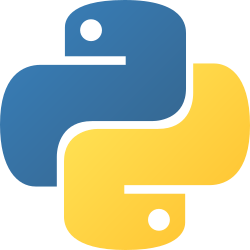

პაითონი წარმოადგენს მაღალი დონის პროგრამირების დინამიურ ენას შესაძლებლობათა ფართო სპექტრით, რომლის დიზაინი ყურადღებას ამახვილებს კოდის ადვილად წაკითხვადობაზე.პაითონის სტანდარტული ბიბლიოთეკა დიდია და ყოვლელმხრივი. ის იყენებს ძალზე იშვიათ გამომყოფებს ბლოკებისთვის აბზაცებს.პაითონი მულტიპარადიგმული ენაა და მოიცავს როგორც პროცედურული, იმპერატიული, ისე ფუნქციონალური პროგრამირების ელემენტებს. მას ხშირად ადარებენ ისეთ ენებს, როგორებიცაა Tcl, Perl, Ruby, Scheme და Java.